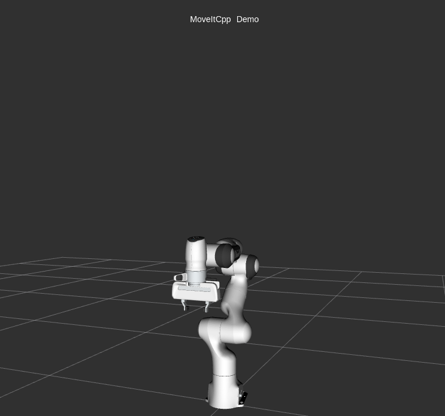
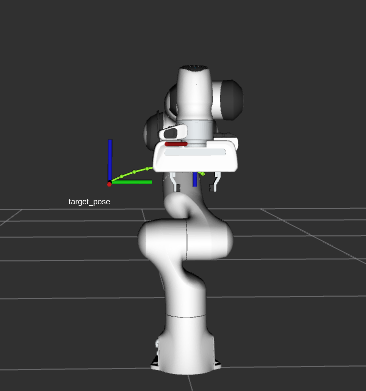
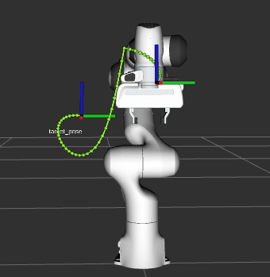
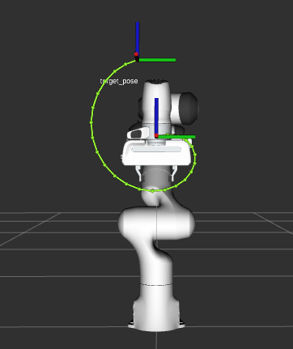
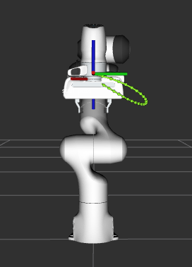
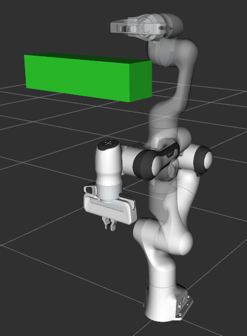

MoveItCpp Tutorial
Introduction
MoveItCpp is a new high level interface, a unified C++ API that does not require the use of ROS Actions, Services, and Messages to access the core MoveIt functionality, and an alternative (not a full replacement) for the existing MoveGroup API, we recommend this interface for advanced users needing more realtime control or for industry applications. This interface has been developed at PickNik Robotics by necessity for our many commercial applications.
{kind=link}
Getting Started
If you haven’t already done so, make sure you’ve completed the steps in Getting Started.
Running the Code
Open a shell, run the launch file:
ros2 launch moveit2_tutorials moveit_cpp_tutorial.launch.py
After a short moment, the RViz window should appear and look similar to the one at the top of this page. To progress through each demo step either press the Next button in the RvizVisualToolsGui panel at the bottom of the screen or select Key Tool in the Tools panel at the top of the screen and then press 0 on your keyboard while RViz is focused.
The Entire Code
The entire code can be seen here in the MoveIt GitHub project. Next we step through the code piece by piece to explain its functionality.
Setup
static const std::string PLANNING_GROUP = "panda_arm";
static const std::string LOGNAME = "moveit_cpp_tutorial";
/* Otherwise robot with zeros joint_states */
rclcpp::sleep_for(std::chrono::seconds(1));
RCLCPP_INFO(LOGGER, "Starting MoveIt Tutorials...");
auto moveit_cpp_ptr = std::make_shared<moveit_cpp::MoveItCpp>(node);
moveit_cpp_ptr->getPlanningSceneMonitor()->providePlanningSceneService();
auto planning_components = std::make_shared<moveit_cpp::PlanningComponent>(PLANNING_GROUP, moveit_cpp_ptr);
auto robot_model_ptr = moveit_cpp_ptr->getRobotModel();
auto robot_start_state = planning_components->getStartState();
auto joint_model_group_ptr = robot_model_ptr->getJointModelGroup(PLANNING_GROUP);
Visualization
The package MoveItVisualTools provides many capabilities for visualizing objects, robots, and trajectories in RViz as well as debugging tools such as step-by-step introspection of a script
moveit_visual_tools::MoveItVisualTools visual_tools(node, "panda_link0", "moveit_cpp_tutorial",
moveit_cpp_ptr->getPlanningSceneMonitor());
visual_tools.deleteAllMarkers();
visual_tools.loadRemoteControl();
Eigen::Isometry3d text_pose = Eigen::Isometry3d::Identity();
text_pose.translation().z() = 1.75;
visual_tools.publishText(text_pose, "MoveItCpp_Demo", rvt::WHITE, rvt::XLARGE);
visual_tools.trigger();
Start the demo
visual_tools.prompt("Press 'next' in the RvizVisualToolsGui window to start the demo");
Planning with MoveItCpp
There are multiple ways to set the start and the goal states of the plan they are illustrated in the following plan examples
Plan #1
We can set the start state of the plan to the current state of the robot
planning_components->setStartStateToCurrentState();
The first way to set the goal of the plan is by using geometry_msgs::PoseStamped ROS message type as follow
geometry_msgs::msg::PoseStamped target_pose1;
target_pose1.header.frame_id = "panda_link0";
target_pose1.pose.orientation.w = 1.0;
target_pose1.pose.position.x = 0.28;
target_pose1.pose.position.y = -0.2;
target_pose1.pose.position.z = 0.5;
planning_components->setGoal(target_pose1, "panda_link8");
Now, we call the PlanningComponents to compute the plan and visualize it. Note that we are just planning
auto plan_solution1 = planning_components->plan();
Check if PlanningComponents succeeded in finding the plan
if (plan_solution1)
{
Visualize the start pose in Rviz
visual_tools.publishAxisLabeled(robot_start_state->getGlobalLinkTransform("panda_link8"), "start_pose");
Visualize the goal pose in Rviz
visual_tools.publishAxisLabeled(target_pose1.pose, "target_pose");
visual_tools.publishText(text_pose, "setStartStateToCurrentState", rvt::WHITE, rvt::XLARGE);
Visualize the trajectory in Rviz
visual_tools.publishTrajectoryLine(plan_solution1.trajectory_, joint_model_group_ptr);
visual_tools.trigger();
/* Uncomment if you want to execute the plan */
/* planning_components->execute(); // Execute the plan */
}
Plan #1 visualization:
{kind=link}
Start the next plan
visual_tools.prompt("Press 'next' in the RvizVisualToolsGui window to continue the demo");
visual_tools.deleteAllMarkers();
visual_tools.trigger();
Plan #2
Here we will set the current state of the plan using moveit::core::RobotState
auto start_state = *(moveit_cpp_ptr->getCurrentState());
geometry_msgs::msg::Pose start_pose;
start_pose.orientation.w = 1.0;
start_pose.position.x = 0.55;
start_pose.position.y = 0.0;
start_pose.position.z = 0.6;
start_state.setFromIK(joint_model_group_ptr, start_pose);
planning_components->setStartState(start_state);
We will reuse the old goal that we had and plan to it.
auto plan_solution2 = planning_components->plan();
if (plan_solution2)
{
moveit::core::RobotState robot_state(robot_model_ptr);
moveit::core::robotStateMsgToRobotState(plan_solution2.start_state_, robot_state);
visual_tools.publishAxisLabeled(robot_state.getGlobalLinkTransform("panda_link8"), "start_pose");
visual_tools.publishAxisLabeled(target_pose1.pose, "target_pose");
visual_tools.publishText(text_pose, "moveit::core::RobotState_Start_State", rvt::WHITE, rvt::XLARGE);
visual_tools.publishTrajectoryLine(plan_solution2.trajectory_, joint_model_group_ptr);
visual_tools.trigger();
/* Uncomment if you want to execute the plan */
/* planning_components->execute(); // Execute the plan */
}
Plan #2 visualization:
{kind=link}
Start the next plan
visual_tools.prompt("Press 'next' in the RvizVisualToolsGui window to continue the demo");
visual_tools.deleteAllMarkers();
visual_tools.trigger();
Plan #3
We can also set the goal of the plan using moveit::core::RobotState
auto target_state = *robot_start_state;
geometry_msgs::msg::Pose target_pose2;
target_pose2.orientation.w = 1.0;
target_pose2.position.x = 0.55;
target_pose2.position.y = -0.05;
target_pose2.position.z = 0.8;
target_state.setFromIK(joint_model_group_ptr, target_pose2);
planning_components->setGoal(target_state);
We will reuse the old start that we had and plan from it.
auto plan_solution3 = planning_components->plan();
if (plan_solution3)
{
moveit::core::RobotState robot_state(robot_model_ptr);
moveit::core::robotStateMsgToRobotState(plan_solution3.start_state_, robot_state);
visual_tools.publishAxisLabeled(robot_state.getGlobalLinkTransform("panda_link8"), "start_pose");
visual_tools.publishAxisLabeled(target_pose2, "target_pose");
visual_tools.publishText(text_pose, "moveit::core::RobotState_Goal_Pose", rvt::WHITE, rvt::XLARGE);
visual_tools.publishTrajectoryLine(plan_solution3.trajectory_, joint_model_group_ptr);
visual_tools.trigger();
/* Uncomment if you want to execute the plan */
/* planning_components->execute(); // Execute the plan */
}
Plan #3 visualization:
{kind=link}
Start the next plan
visual_tools.prompt("Press 'next' in the RvizVisualToolsGui window to continue the demo");
visual_tools.deleteAllMarkers();
visual_tools.trigger();
Plan #4
We can set the start state of the plan to the current state of the robot We can set the goal of the plan using the name of a group states for panda robot we have one named robot state for “panda_arm” planning group called “ready” see panda_arm.xacro
/* // Set the start state of the plan from a named robot state */
/* planning_components->setStartState("ready"); // Not implemented yet */
Set the goal state of the plan from a named robot state
planning_components->setGoal("ready");
Again we will reuse the old start that we had and plan from it.
auto plan_solution4 = planning_components->plan();
if (plan_solution4)
{
moveit::core::RobotState robot_state(robot_model_ptr);
moveit::core::robotStateMsgToRobotState(plan_solution4.start_state_, robot_state);
visual_tools.publishAxisLabeled(robot_state.getGlobalLinkTransform("panda_link8"), "start_pose");
visual_tools.publishAxisLabeled(robot_start_state->getGlobalLinkTransform("panda_link8"), "target_pose");
visual_tools.publishText(text_pose, "Goal_Pose_From_Named_State", rvt::WHITE, rvt::XLARGE);
visual_tools.publishTrajectoryLine(plan_solution4.trajectory_, joint_model_group_ptr);
visual_tools.trigger();
/* Uncomment if you want to execute the plan */
/* planning_components->execute(); // Execute the plan */
}
Plan #4 visualization:
{kind=link}
Start the next plan
visual_tools.prompt("Press 'next' in the RvizVisualToolsGui window to continue the demo");
visual_tools.deleteAllMarkers();
visual_tools.trigger();
Plan #5
We can also generate motion plans around objects in the collision scene.
First we create the collision object
moveit_msgs::msg::CollisionObject collision_object;
collision_object.header.frame_id = "panda_link0";
collision_object.id = "box";
shape_msgs::msg::SolidPrimitive box;
box.type = box.BOX;
box.dimensions = { 0.1, 0.4, 0.1 };
geometry_msgs::msg::Pose box_pose;
box_pose.position.x = 0.4;
box_pose.position.y = 0.0;
box_pose.position.z = 1.0;
collision_object.primitives.push_back(box);
collision_object.primitive_poses.push_back(box_pose);
collision_object.operation = collision_object.ADD;
Add object to planning scene
{ // Lock PlanningScene
planning_scene_monitor::LockedPlanningSceneRW scene(moveit_cpp_ptr->getPlanningSceneMonitor());
scene->processCollisionObjectMsg(collision_object);
} // Unlock PlanningScene
planning_components->setStartStateToCurrentState();
planning_components->setGoal("extended");
auto plan_solution5 = planning_components->plan();
if (plan_solution5)
{
visual_tools.publishText(text_pose, "Planning_Around_Collision_Object", rvt::WHITE, rvt::XLARGE);
visual_tools.publishTrajectoryLine(plan_solution5.trajectory_, joint_model_group_ptr);
visual_tools.trigger();
/* Uncomment if you want to execute the plan */
/* planning_components->execute(); // Execute the plan */
}
Plan #5 visualization:
{kind=link}